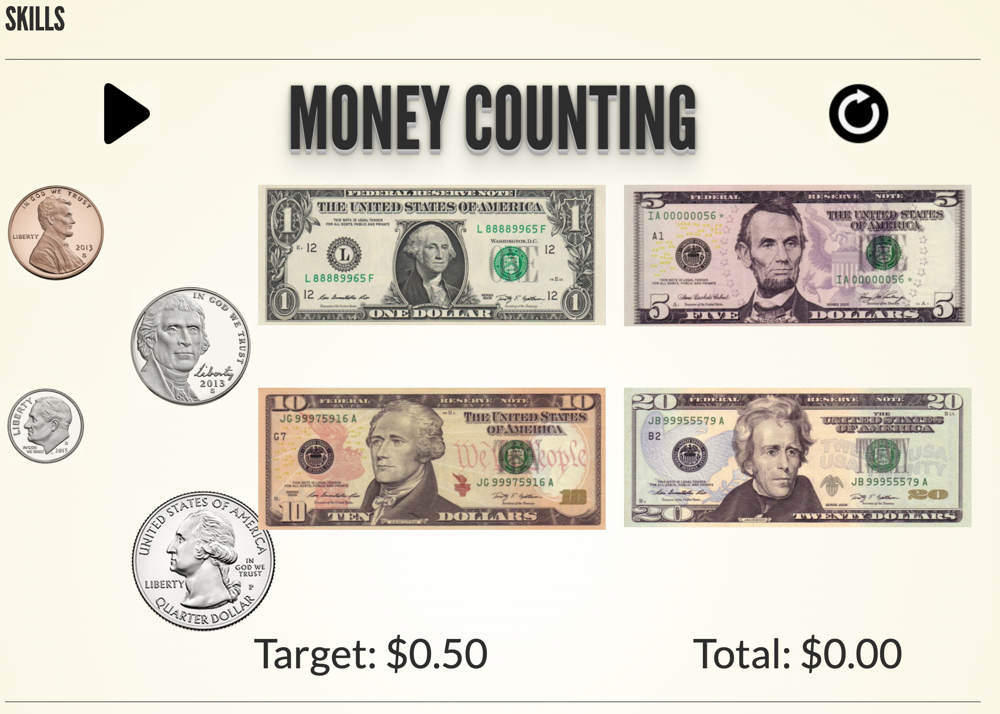

Using a Digital Application to
Refresh Knowledge of Abuse for
Individuals with Intellectual/Developmental Disabilities

Thomas Howard
University of Rhode Island
Krishna Venkatasubramanian,
Noah Daniels, William Kinnersley
Outline
- Introduction
- Collaborative Design
- Usability Evaluation Study
- Discussion
- Conclusions & Future Works
Introduction
Abuse is a Problem
Abuse is a Problem
Regarding individuals with I/DD
- 9/10 abused at least once
- 50% experience 10+ instances
- Often abused by known persons
- Abuse is severely under reported
Education as a Solution
Education as a Solution

- Abuse prevention training is effective
- Shown to increase confidence
- Awareness and Action training
- Logistics of attending in-person training
- Frequency is important to continued understanding
Awareness and Action (A&A) Training
Awareness and Action (A&A) Training
- Conducted by self advocates
- For individuals with I/DD
Digitizing the A&A training
Digitizing the A&A training
- Autonomous learning
- Refreshing knowledge vs teaching
- Emotionally Difficult Material
- Intrinsic Motivation
Key Questions
- What aspects of interactive content inspired by ideas of gamification work for the refresher application?
- How are grounding activities built into the application received by the audience?
- Can an application effectively refresh an individual's knowledge from the Awareness and Action training?
Related Works
Related Works
- Nothing directly related
- Some work in gamification
Collaborative Design
Gathering Requirements
Gathering Requirements


- Generating Personas
- Writing scenarios
- Producing use-cases
- Creating requirements
- Developing prototypes
Collaborative Design Session
Collaborative Design Session
- Six co-designers
- Four self-advocates, two coordinators
- Five prototypes to be presented
- Prototype projected and distributed
| ID | Self-Advocate |
|---|---|
| C1 | check |
| C2 | check |
| C3 | check |
| C4 | check |
| C5 | close |
| C6 | close |
Low-Fidelity Prototypes
Low-Fidelity Prototypes
Emotional Reinforcement
 Grounding Activities
Grounding Activities
Quizzes
Interactive Elements

Skills Activities
Feedback: Emotional Reinforcement
"[the application should] never take anything away from somebody." - C5
- Generally negative
- Taking away happiness
- Avoid negative reinforcement
Feedback: Grounding Activities
"it can be a little hard for people [to go through the training]" - C1
- Very positive
- All participants valued this element
- Avoid mandatory fun
- Add a time limit
Feedback: Interactive Elements
"Can you see the smoke coming out of my ears yet?" - C5

- Generally positive
- Confusing interface
- Overly complicated
- Move to discrete clips
Feedback: Quizzes
"[it] should either, you know, talk about physical abuse or show the video" - C4
- Very positive
- Would benefit users
- Not enough on its own
- Make it optional
Feedback: Skills Activities
"TODO" - C
- Generally positive
- No Touch Zones
- Money Counting
- Identifying Emotions was challenging
Medium-Fidelity Prototypes
Version A
Verson B
Version C
 Grounding Activity
Grounding Activity
 Reward
Reward
Usability Evaluations
Methodology
Methodology
- Remote Synchronous Trials
- Six participants with I/DD
- Zoom Video Call
- Shared virtual emulator
- Remote control ceded where possible
- Interview Questions + Verbal Feedback
Participants
| ID | Age | Gender | Disability | Had Control |
|---|---|---|---|---|
| P1 | 34 | M | ASD | close |
| P2 | 46 | F | IDD - Hearing Loss | check close |
| P3 | 29 | M | Seizure Disored, ASD | check |
| P4 | 43 | M | Acquired Brain Injury - IDD | check |
| P5 | 27 | M | William Syndrome, PTSD, Chronic Anxiety | close |
| P6 | N/P | M | N/P | check |
Procedure
Procedure
- One participant per session
- Participant completes a lesson
- Interview questions
- After all versions, final interview questions
- One hour per session
- Recorded in its entirety + researcher notes
Data Analysis
Data Analysis
- Thematic analysis over all session
- Iteratively developed code
Results: Participants Favorites
Results: Participants Favorites
| Participant | Favorite | Middle | Least Favorite |
|---|---|---|---|
| P1 | B | C | A |
| P2 | C | A | B |
| P3 | B | C | A |
| P4 | C | B | A |
| P5 | C | B | A |
| P6 | B | A | C |
Results: Impact of Interaction
Results: Impact of Interaction
- Video quizzes were engaging
- Skills Activities were informative
- Lack of engagement with Slides
- Acknowledgement via Emojis
Results: Grounding Activities
Results: Grounding Activities
- Extremely important
- Xylophone as an option
Results: Effectiveness
Results: Effectiveness
- Recommending others use the application
- Willingness to download
Discussion
Recommendations for Future Applications
Recommendations for Future Applications
- one
- two
Reporting Abuse
Reporting Abuse
- one
- two
Limitations
Limitations
- one
- two
Future Work
Large Scale Evaluations
Large Scale Evaluations
- one
- two
Emotional Reinforcement
- Virtual pet
- Happiness increases with training
- Happiness decays over time
- Maintaining happiness
- Intrinsic motivation
Grounding Activities
- Programmatic breaks
- Extremely difficult content
- Emotionally triggering
- First-hand experience
Interactive Elements
- Constant interaction
- Increased engagement
- Flagging abuse / not abuse
Quizzes
- Presented a traditional quiz
- Prompting users to think
- Only quizzes
Skills Activities
- Tangential skills
- Variety of activities
- No Touch Zones: Sexual Abuse
- Money Counting: Financial Abuse
- Identifying Emotions: More General